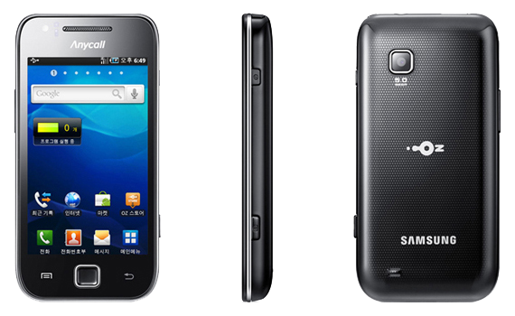

삼성 갤럭시 U
1. 외관

삼성전자가 2010년 3월, CTIA 2010에서 공개한 갤럭시 S의 파생 모델.
2. 사양
| 프로세서 | 삼성 엑시노스 3110 SoC. ARM Cortex-A8 1 GHz CPU, PowerVR SGX540 200 MHz GPU | ||
| 메모리 | 512 MB RAM, 1 GB OneNAND[2] 내장 메모리, micro SDHC (최대 32 GB 지원) | ||
| 디스플레이 |
3.7인치 WVGA(480 x 800) RG-BG 펜타일 서브픽셀 방식의 SMD AMOLED Plus 멀티터치 지원 정전식 터치 스크린 |
||
| 네트워크 | 기본 | CDMA & EV-DO Rev. A, | Wi-Fi 802.11b/g/n, 블루투스 3.0 |
| - | - | ||
| 카메라 | 전면 30만 화소, 후면 500만 화소 AF | ||
| 배터리 | Li-Ion 1500 mAh | ||
| 운영체제 | 안드로이드 2.1 (Eclair) → 2.2 (Froyo) → 2.3 (Gingerbread) | ||
| 규격 | 59.6 x 119.5 x 12.4 mm, 131 g | ||
3. 상세
2010년 8월에 출시한 안드로이드 스마트폰. 대한민국 lg유플러스용 모델이다.